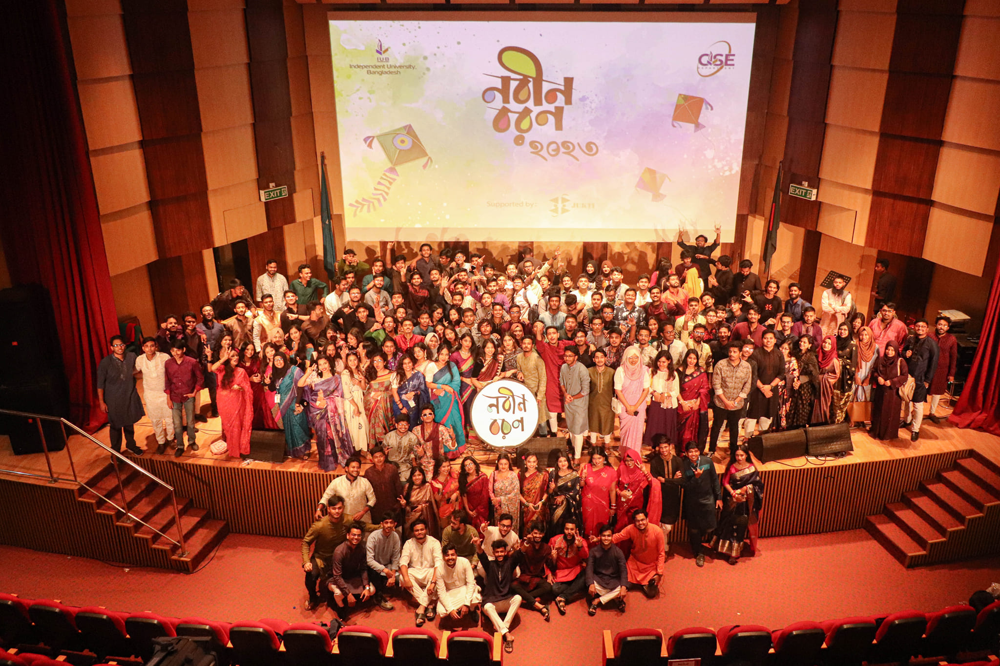
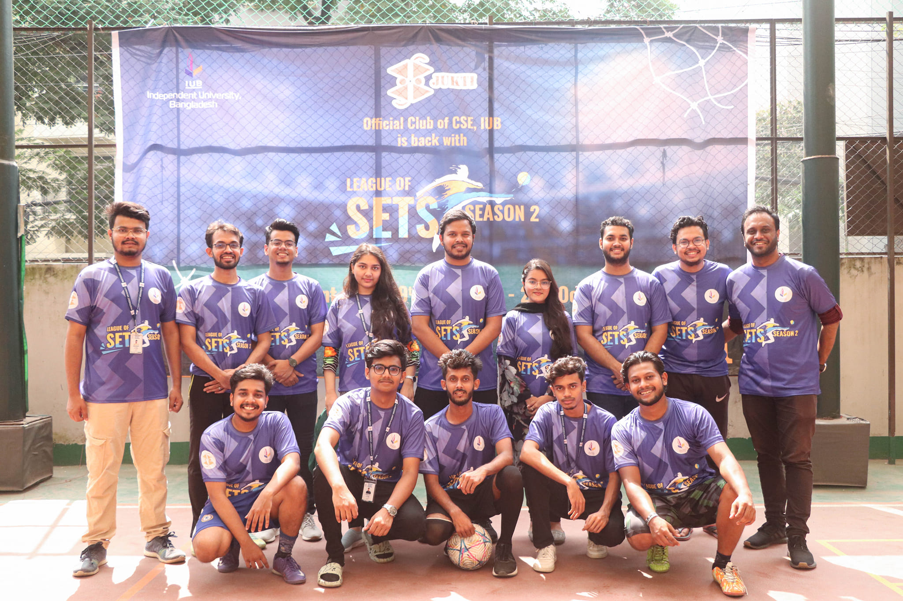

১৭ই অক্টোবর, মঙ্গলবার বিকাল বর্ণাঢ্য আয়জনের মধ্য দিয়ে সিএসই বিভাগের ২০২৩ নবীন শিক্ষার্থীদের বরন করে নেওয়া হয়েছে। এ সময় তাদের শুভেচ্ছাসহ আলোচনা সভা ও সাংস্কৃতিক অনুষ্ঠানের আয়োজন করা হয়। সেখানে স্বাগত বক্তব্য দেন সিএসই বিভাগের প্রধান ড. মাহাদী হাসান এবং সাথে উপাচার্যের অনুপস্থিতিতে উনার শুভেচ্ছা বার্তা নবীনদের মাঝে পৌঁছে দেন। বিশেষ অতিথি হিসেবে উপস্থিত ছিলেন স্কুল অফ ইঞ্জিনিয়ারিং, টেকনোলজি এন্ড সাইন্সেস এর ডিন ড. মোঃ মামুন বিন ইবনে রিয়াজ তিনি তাঁর বক্তব্যে আগত শিক্ষার্থীদের শুধু উচ্চ শিক্ষিত নয় আদর্শ মানুষ ও দেশপ্রেমে উদ্বুদ্ধ হয়ে যোগ্য নাগরিক হিসেবে গড়ে তোলার প্রতি গুরুত্ব আরোপ করেন। তাছাড়া অনুষ্ঠানটিতে উপস্থিত ছিলেন ড. আশরাফুল আমিন, ড. আমিন আহসান আলী, ড. সাদিয়া বিনতে আলম এবং সিএসই বিভাগের সকল সম্মানিত শিক্ষকবৃন্দ।
বিভাগীয় শিক্ষার্থীদের গানের সুরে, কবিতার ছন্দে, নৃত্যের মূর্ছনায় এবং বিভিন্ন খেলার মধ্য দিয়ে অনুষ্ঠানটি ছিল প্রানবন্ত। JUKTI - Club of CSE, IUB এর আয়োজনে অন্যান্য ক্লাব গুলির উপস্থিতি অনুষ্ঠানটির একটি নতুন মাত্রা এনে দিয়ে ছিল যা নবীন শিক্ষার্থীদের পথচলা এবং শিক্ষার গুরুত্ব দেওয়ার সুন্দর উদাহরণ।
মিসেস সাবরিনা আলম, সিনিয়র শিক্ষক ও ফ্যাকাল্টি অ্যাডভাইজার, JUKTI – Club of CSE, IUB ধন্যবাদ জ্ঞাপনের মাধ্যমে এবং শিক্ষার্থীদের ভবিষ্যতের প্রচেষ্টার জন্য পাশে থাকার প্রতিশ্রুতি দিয়ে অনুষ্ঠানটি শেষ করেন।

League of SETS - Season 2 is a tournament organized by JUKTI - Official Club of CSE that brings together students from all over School of Science and Engineering Technology. A highlight of this tournament is the inclusion of a female team, promoting inclusivity and diversity. The tournament started with excitement and a spirit of healthy competition.